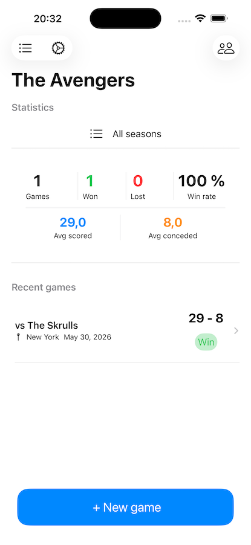
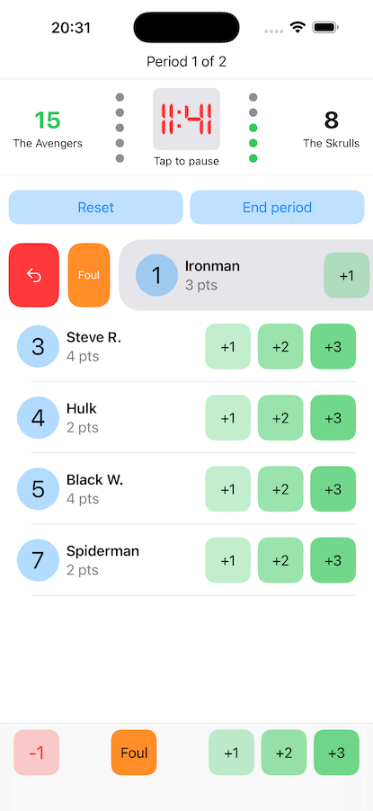
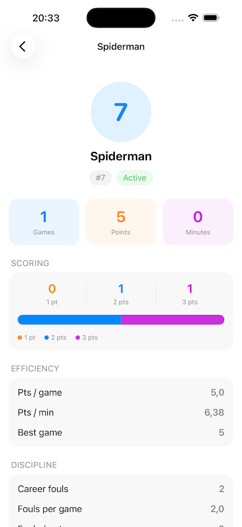

<style>
    /* Header */
    header {
        padding: 100px 30px 80px;
        text-align: center;
        background: #fafbfc;
    }

    h1 {
        font-size: 3.2em;
        margin-bottom: 20px;
        font-weight: 600;
        color: #1a1a1a;
        letter-spacing: -0.5px;
    }

    .subtitle {
        font-size: 1.3em;
        color: #5a6c7d;
        margin-bottom: 15px;
        font-weight: 400;
    }

    .meta {
        font-size: 1em;
        color: #7a8a9a;
        margin-bottom: 40px;
    }

    .download-btn {
        display: inline-block;
        background: #000000;
        color: white;
        padding: 14px 40px;
        text-decoration: none;
        border-radius: 8px;
        font-weight: 500;
        font-size: 1em;
        transition: background 0.2s;
    }

    .download-btn:hover {
        background: #333333;
    }

    /* Main Content */
    section {
        padding: 70px 30px;
    }

    section:nth-child(even) {
        background: #fafbfc;
    }

    h2 {
        font-size: 2em;
        margin-bottom: 40px;
        font-weight: 600;
        color: #1a1a1a;
        text-align: center;
    }

    /* Features */
    .features-list {
        max-width: 800px;
        margin: 0 auto;
    }

    .feature {
        margin-bottom: 50px;
    }

    .feature h3 {
        font-size: 1.4em;
        margin-bottom: 12px;
        color: #2c3e50;
        font-weight: 600;
    }

    .feature p {
        font-size: 1.05em;
        color: #5a6c7d;
        line-height: 1.7;
    }

    /* Foul rules grid */
    .foul-grid {
        display: grid;
        grid-template-columns: repeat(auto-fit, minmax(280px, 1fr));
        gap: 20px;
        max-width: 900px;
        margin: 0 auto;
    }

    .foul-item {
        background: #ffffff;
        border: 1px solid #e0e0e0;
        padding: 25px;
        border-radius: 6px;
        font-size: 1.05em;
        color: #2c3e50;
        line-height: 1.7;
    }

    .foul-item h4 {
        font-size: 1.1em;
        font-weight: 600;
        margin-bottom: 12px;
        color: #1a1a1a;
    }

    section:nth-child(even) .foul-item {
        background: #ffffff;
    }

    /* Screenshots */
    .screenshot-grid {
        display: flex;
        justify-content: center;
        gap: 30px;
        flex-wrap: wrap;
        margin-top: 50px;
    }

    .screenshot-wrapper {
        text-align: center;
    }

    .screenshot-wrapper p {
        margin-top: 12px;
        font-size: 0.9em;
        color: #7a8a9a;
    }

    .screenshot-placeholder {
        width: 240px;
        height: 520px;
        border-radius: 20px;
        box-shadow: 0 4px 12px rgba(0,0,0,0.1);
        object-fit: cover;
    }

    @media (max-width: 768px) {
        h1 { font-size: 2.2em; }
        .subtitle { font-size: 1.1em; }
        h2 { font-size: 1.6em; }
    }
</style>

<!-- Header -->
<header>
    <div class="container">
        
        <h1>Sacore</h1>
        <p class="subtitle">Basketball Stats & Game Tracker</p>
        <p class="meta">Free · No Ads · Privacy-First</p>
        <a href="#" class="download-btn">Download on the App Store</a>
    </div>
</header>

<!-- About -->
<section>
    <div class="container">
        <h2>Purpose</h2>
        <div class="features-list">
            <div class="feature">
                <p>Sacore is a basketball stats and game tracking app designed for coaches and parents who want to keep a complete record of their team's season. Manage your roster, track every basket and foul in real time, and review detailed statistics after the final whistle — all without accounts, subscriptions, or external servers.</p>
            </div>
        </div>
    </div>
</section>

<!-- About This Project -->
<section>
    <div class="container">
        <h2>About This Project</h2>
        <div class="features-list">
            <div class="feature">
                <p>Sacore was built as a personal project after considerable pestering from a friend who wanted to keep score at his son's games and considered a spreadsheet too much effort. What started as a simple scoreboard grew into a full season tracker with foul management, player statistics, and substitution tracking.</p>
                <p>It remains free and privacy-focused because the people watching youth basketball on weekend mornings don't need another subscription. All data stays on your device — no account required, no data sent anywhere.</p>
            </div>
        </div>
    </div>
</section>

<!-- Features -->
<section>
    <div class="container">
        <h2>Features</h2>
        <div class="features-list">
            <div class="feature">
                <h3>Team & Roster Management</h3>
                <p>Create one or more teams and manage each roster independently. Add players with name and jersey number, mark them as active or inactive across the season, and assign a profile photo to each.</p>
            </div>
            <div class="feature">
                <h3>Live Game Tracking</h3>
                <p>Before each game, select the nominated players and starting lineup. During the game, record 1-, 2-, and 3-point baskets per player with a single tap, undo the last score if you mis-tap, manage the visiting team's score manually, and control the game clock with configurable periods and duration. Player substitutions between the starting five and the bench can be made at any time.</p>
            </div>
            <div class="feature">
                <h3>Foul Tracking</h3>
                <p>Sacore tracks fouls separately for the home and visiting teams, following standard basketball rules. See the Foul Rules section below for full details.</p>
            </div>
            <div class="feature">
                <h3>Season Statistics</h3>
                <p>After each game, Sacore automatically saves per-player stats that can be reviewed at any time: total points and breakdown by basket type, minutes played, scoring efficiency (points per game, points per minute, personal best), discipline data (career fouls, fouls per game, disqualifications), and participation figures (win rate, appearance rate, substitution count). A point trend chart visualises each player's progression across the season. Stats can be filtered by season year.</p>
            </div>
            <div class="feature">
                <h3>iCloud Sync</h3>
                <p>Optionally sync your teams, rosters, and game history across devices using your personal iCloud account. All data remains encrypted and private — we never have access to it.</p>
            </div>
            <div class="feature">
                <h3>Privacy-First Design</h3>
                <p>No accounts. No external servers. No analytics or telemetry. No advertising. Everything stays on your device unless you enable iCloud sync.</p>
            </div>
        </div>
    </div>
</section>

<!-- Foul Rules -->
<section>
    <div class="container">
        <h2>Foul Rules</h2>
        <div class="foul-grid">
            <div class="foul-item">
                <h4>Home Team — Per Player</h4>
                Fouls are recorded individually per player using a swipe gesture on the live game screen. A five-circle indicator shows each player's foul count: grey (none), green (1–3), yellow (4th foul), red (5th foul). At <strong>5 fouls</strong> the player is <strong>disqualified</strong> and their row is highlighted in red to alert the coach. Home team fouls accumulate across the entire game.
            </div>
            <div class="foul-item">
                <h4>Visiting Team — Per Period</h4>
                A simple foul counter is tracked per period for the visiting team. At <strong>5 fouls in the period</strong> the foul button is disabled. The counter resets automatically at the start of each new period.
            </div>
        </div>
    </div>
</section>

<!-- Screenshots -->
<section>
    <div class="container">
        <h2>Interface</h2>
        <div class="screenshot-grid">
            <div class="screenshot-wrapper">
                
                <p>Dashboard</p>
            </div>
            <div class="screenshot-wrapper">
                
                <p>Live Game</p>
            </div>
            <div class="screenshot-wrapper">
                
                <p>Statistics</p>
            </div>
        </div>
    </div>
</section>

<!-- Legal Notice -->
<section>
    <div class="container">
        <h2>Legal Notice</h2>
        <div class="features-list">
            <div class="feature">
                <p style="text-align: center;"><em>No responsibility is accepted for statistical discrepancies, recording errors, or any issues arising from the use of Sacore. Basketball rules implementation is based on standard FIBA youth regulations and may differ from local league rules.</em></p>
            </div>
        </div>
    </div>
</section>
